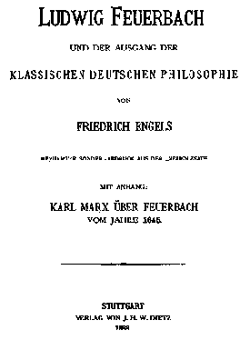

Frederick Engels

Written: 1886;
First Published: 1886, in Die Neue Zeit;
Source: Progress Publishers edition;
Translated: by Progress Publishers in 1946;
Transcription/Markup: Paul Taylor;
Proofed: Jim W. Jaszewski, 2003;
Online Version: Marx Engels Internet Archive 1994.
Contents:
Foreword
Part 1: Hegel
Part 2: Materialism
Part 3: Feuerbach
Part 4: Marx